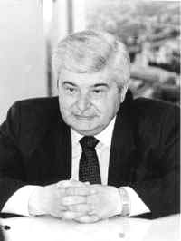

Первому мэру Москвы
Попову Гавриилу Харитоновичу
Биография
"Я не выдержал экзамена на пост мэра, но я выдержал гораздо более важное испытание - на то, чтобы сохранить имя российского демократа."
Из книги "Снова в оппозиции"